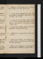
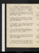
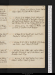
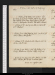

- About
- Diary
- People
- Events
- Reading
- Writing
- Meals
- Meetings
- Search

1799. Jan. 1. Tu.Siege of Damascus: Barruel, p. 42: Hereford, çala. rhumee.
2. W.Irene: Barruel, p. 129. Dine at Fell's, w. M & Fenwicks.
3. Th.Brantome, çala. Dyson & M dine;adv. Dibbin: call on Ritson.
4. F.Univ. History, çala. Stoddart calls: tea C Smith's.
5. Sa.Antonio, p. 1, 2/2. Tancred, acte 1: U H, çala. Dyson & L J call: Jas Wt dines.

[fol. 14r] Jan. 6. M. eAntonio, p. 2/2, 3/2. Tancrède, actes 2, 3, 4: U H çala. Fell calls: dine at
Ht's, w. Clementi,
Foulkes's & L M; adv. Plumptres, & Banks's, &
Stoddart.
7. Tu.eAntonio, p. 3/2, 4/2. Tancrède, acte 5: U H çala. Call on H Lee: M dines; adv. Fell.
8. W.eU H çala: Barruel, p. 148. Dine at Reveley's, w. Stoddart.
9. W.Orphelin de la Chine, actes 1, 2: Duplicity, acts 1, 2. Ht calls: M dines; adv. Fenwick. read .
10. Th. Antonio, 1 1/2 pages. Duplicity, acts 3, 4, 5. F Ht & L Mercier call: theatre, Douglas; adv. O'Briene: sup at C Smith's, w. H & A Lee.
11. F.Antonio, 4 1/2 pages. Dine at Hts, w. Clementi, Aickin, Nicholsons, Banks's, Foulkes's, & Stoddart & L Mercier.
12. Sa.Antonio, 5 pages. M dines: Fenwick calls: theatre, Votary of Wealth; adv. Fell, M, Lees & Inchbalde.
Jan. 13, Su.Antonio, 3 pages. Call on Ht & Nicholson: M, H G &L J dine; adv. Dyson & Dibbin: Dyson sleeps.
14. M.Antonio, p. 3, 4/2. U H çala. Call at Ht's: sup at Nicholson's. J G dines.
15. Tu.Antonio, p. 4/2, 5. Swinburne, çala. Ht G calls: M & Jas Wt dine: tea H Lee's.
16. W.Antonio, p. 6-11. Jones calls: dine at King's, w. Davis's, Stevenson & Pinkard.
17. Th.Antonio, p. 11. Dyson & Tobin call: theatre, 1/2 Measure for Measuree.
18. F.Antonio, 2 pages. Orphelin, actes 3 & 4: call on Chandlern & O Fancourtn.
19. Sa.Antonio, p. 27, 28, 29. Orphelin, acte 5. Cha. Smith, Northcote, Chandler & O Fancourt dine: mtR Johnson.
Jan. 20. Su. Antonio, p. 30, 31, 32. Rome Sauvée, acte 1. Hollis calls: dine at Ht's, w. Stoddart; adv. Tobin: tea H Lees, w. C Smith & miss Steers.
21. M.Antonio, 1 page. Rome Sauvée, acte 2: Clement Arnold, Vol. II. Theatre, Fop's Fortune & Feudal Times; adv. Boddingtone.
22. Tu. Antonio, 12 lines. Rome Sauvée, acte 3: Vagabond, Vol. I. Call on Fell: M dines. Union debated: voted in the Irish Commons, majority, onee.
23. W.Rome Sauvée, actes 4 & 5: Oberon, 9 cantos. Call on major Whiten. Naples entered by the Frenche.
24. Th.Oberon, 3 cantos, fin: Vagabond, Vol. II. Major White calls: L J & M dine: sup at Hollis's, w. Antony. Rejected in do, majority, fivee.
25. F. Antonio, 12 lines. Oreste. Fell at tea: theatre, Wondere.
26. Sa.Antonio, p. 33. Combe & Tobin call: meet K Courtenay: call on Chandler; adv. Philips: sup at Fell's.
Jan. 27. Su.Antonio, p. 34. Mahomet: Mackintosh's Discourse, pp. 66. L J dines. Barruel, p. 212.
28. M.Antonio, p. 35/2. Tea Barbauld's, w. L Aikin: maj. White calls: call on Pinkertonn.
29. Tu. Antonio, p. 35/2, 36/2. Mlle Le Canu, M Hays & miss Reid: dine at Johnson, w. Paterson (Coryat), Norgate, Wells & Newnum.
30. W.Antonio, p. 36/2, 37. Dine at Fell's, w. Dignums, Taylor, M, mrs Palmer & Arabella Hunt.
31. Th.Swinburne, fin: Townsend, çala. M dines. Mrs F. affirms, that the subjects of the Mahometan princes in India are all Moors, & the subjects of the Hindoo princes all Hindoos.
Feb. 1. F.Antonio, p. 38, 39/2. Alzine, actes 1, 2. L J calls: dine at Fancourt's, with mrs Vardon, C Bence, Hodson & Chandler.
2. Sa.Invent pi[r?]ates. Alzine, actes 3, 4, 5: Mackintosh, pp. 66. Theatre, 4/5 Much Adoe.

Feb. 3. Su. Man of Quality, çala. Call on Mackintosh (adv. Laing, C Marsh, C Moore & R Adair), & Perry: dine at Ht's, w. Barry, Tobins & L Mercier; adv. Opies.
4. M.Antonio, p. 1, 2. Ja Wt & M dine: Fenwick calls: theatre, Guardian & Magic Oak; adv. Geo. IIIe.
5. Tu.Antonio, p. 3, 4. Dine at Reveley's: tea C Smith's.
6. W.Antonio. Piratical States, p. 132. L J calls. Phédre, actes 1 & 2.
7. Th. Antonio, p. 1, 2/2. Phédre, acte 3: Uni History, çala: Pirat States, p. 183. Theatre, School for Scandal; adv. O'Briene: call on Fell.
8. F.Antonio, p. 2/2, 3. Phédre, acte 4: Barruel, p. 236: Pir States, p. 284. Dine at King's, w. Burroughs's, Hardistys, D. Campbel, Carter & Langley; adv. Danvers.
9. Sa.Antonio, p. 4. Phédre, act 5: Brittanicus, acte 1: Pirat. States, p. 368, fin: U H çala. Major White calls.
Feb. 10. Su. Antonio, p. 5, 6. Brittanicus, acte 2: Barruel, p. 250. R & L J, Langley & Dyson dine.
11. M. Antonio, p. 7, 8/2. Brittanicus, acte 3: Barruel, p. 262: Knights of Malta, çala. M dines: theatre, Hamlet 2/5e.
12. Tu.Antonio, p. 8/2-13. Fell calls: call on Ht, (adv. Tobin) & W Hazlit: sup at Nicholson's: meet Geddes. I
13. W.Antonio, p. 13, 14. Dyson dines: M sups. Invent Henry.
14. Th. Antonio, p. 15, 16, 17. Knights of Malta, çala.
15. F. Antonio, p. 18-24. Knights of Malta, çala. M dines: Oratorio, Selectione.
16. Sa. Antonio, p. 24, 25, 26. Knights of Malta, çala. Theatre, 7/10 Country Girle.
Feb. 17. Su.Antonio, 2 pages. Call on Fell: meet Bosville: dine at Ht's, w. Opies, Foulkes's, Clementi, Stoddart, Nunnis, Field & L Mercier: M sups.
18. M.Antonio, 8 lines. Knights of Malta, çala. Dine at Mackintosh, w. Scarlet, Allens & a Courtenay.
19. Tu.Antonio, 8 lines. M dines: theatre, 2/3 Child of Naturee: sup at Nicholson's; adv. Morecraf[t?].
20. W.Antonio, 8 lines. Mackintosh's Lecture; see W W, Wedgwoods, Allens, Carlisle, Batty, Hazlit, C Marsh & C Mooree: dine at Fell dines: call on M Hays: sup at Fell's.
21. Th.Antonio, p. 23, 24. Meet Sheridan, M E Robinson, M Hanway, (Falkland, Tierney, Adair, Gadagne) maj. White & R Johnson: theatre, As You Like It. (adv. Matthew.)e
22. F.Antonio, 5 lines. Meet R Knight: theatre, Acis & Galatea; adv. O' Brien (Piercy & col. Hastings.)e
23. Sa.Antonio, p. 25, 26. Brittanicus, actes 4, 5: Pere de Famille, acte, 1, 2/2. Mackintosh's Lecture; W W, J W, Allens, Matthews, C Marsh, C M, Carlisle, Batty, Stoddart, Burrel & Felle : call on E Fn, Carlislen & Ht.
Feb. 24. Su.Antonio, 3 lines. Père de Famille, fin: Pope's Eloisa. Ritson calls: Dibbin, H G & L J dine.
25. M. M dines: tea M Robinson's.
26. Tu.Ht & Tobin call: call on Nicholson: tea M Robinson's, w. Grant & Bird.
27. W.Clement Arnold, Vol. III, p. 30. Fell & Jno G call: M & J G dine: call on E Fn & C Sn. meet Tookes.
28. Th. Antonio, p. 27-31. Clement Ad, p. 55, fin: Esther, actes 1 & 2. Ht G & school- dame call: sup at Fell's: L J &M call. II
Mar. 1. F.Antonio, p. 31, 32, 33. Esther, acte 3. Call on M Reveley; adv. Pearson: L J & Dibbin at tea.
2. Sa.Antonio, p. 34-38. Mackintosh; Boaden, Carlisle, Stoddart, Burrel, C M, C M, Allens & Fell: theatre, Secret; adv. Barry & Philipse.
Mar. 3. Su.Antonio, 38, 39. Sigismunda. Theodore & Cinyras. Meet W W & B Allen: dine at Ht's, w. Barry, Stoddart, L & E Mercier; adv. T M & Spurling: Dibbin, Dyson & school-dame call.
4. M.Antonio, p. 40. Palamon & Arcite. Pinkerton, L J & Dyson call: Stoddart & Jas Wt dine; adv. Fell: theatre, Oscar & Malvinae. Ht marriede.
5. Tu.Antonio, 20 lines. Fawcet calls: Mrs Fuseli, mrs Newnum & Mackintosh call n: dine at Reveley's: call on E F & Hts: sup at Opie's.
6. W. Antonio, 30 lines. Atrée, actes 1 & 2. J Toke calls: M dines; adv. Fawcet. Le Bon Menage.
7. Th. Antonio, p. 41, 42. Minister. Hts dine: Duchemin calls.
8. F.Antonio, p. 41, 42, 43/2. Fell dines: Oratorio, 1/2 Messiahe .
9. Sa. Atrée, actes 3, 4, 5: Dépit Amoureux: Clarkson of Paisley calls: theatre, 2/5 Secrete.
Mar. 10. Su. Antonio, p. 43/2, 44, 45. Misanthrope, actes 1, 2. L J & M dine: sup at M Robinson's: meet H Barry.
11. M. Antonio, p. 44, 45. Misanthrope, actes 3, 4, 5: Tartuffe, acte 1. M dines: theatre, 2/5 Laugh When You Cane: E F calls.
12. Tu.Antonio, p. 46. Alexandre, acte 1: Tartuffe, acte 2. Dine at Johnson's, w. Fuseli, Paterson & Newnums; adv. Wells.
13. W.Antonio. (Othello's occupation), 2 pages. Tartuffe, acte 3: George Dandin. M dines: call at Ht's: sup at Nicholson's.
14. Th.Revise act 3. Alexandre, actes 2, 3: Tartuffe, actes 4, 5: Ecole des Femmes, actes 1, 2.
15. F.Antonio, p. 47, 48. M dines: Oratorio, 1/10 Selectione.
16. Sa.Antonio, p. 49. St Julien, p. 87. Call on Sheridanna, & Chandler ; adv. Philips: dine at Perry's, w. Opies, Hts, S Cole, Villeneuves & Chalmers.
Mar. 17. Su.Ecole des Femmes, fin. Dine at Ht's, w. mrs Foulkes, S C, E M & Nunnick: meet L J, & Dibbin & C Moore: R Jones calls n.
18. M.Les Voleurs, actes 1 & 2. Call on Sheridan: meet R Twiss: M dines. Otridge's. Rheumatismee.
19. Tu.Les Voleurs, fin. M dines: call on Cha Smith; adv. W S. Lunn's & Dulau's. Read Antonio.
20. W. Alexandre, acte 4: Thucydide, p. 72. Call on M: Dyson at tea. Nunn's, Egerton's & Otridge's. Surditée.
21. Th. Read Antonio.M dines: call on Ht (Beaumont Street) & E Fenwick.
22. F.Rymer on Tragedy, çala. M sups.
23. Sa.Antonio, 1 1/2 pages. King & No King. Call on Sheridan [n?] & Northcote: M dines.
Mar. 24. Su.Antonio, p. 29, 30/2. Dryden's Essay, p. 40. M Moore & + + call: M , H G & L J call: E F, dine; adv. E F, Dibbin & Dyson.
25. M.Antonio, p. 30/2, 31/2. Maid's Tragedy, acts 1 & 2: Dryden, p. 70, fin. Dine at M's: theatre, Div[t?], & 5000 a Yeare.
26. Tu.Maid's Tragedy, fin: Philaster. M sups. Cleomenes, act 1. Call on Ritsonn.
27. W.Antonio, p. 31/2, 32/2. Rodogune, actes 1 & 2: Rollo, acts 1 & 2. Call on C Smith. n : Jas Wt dines; adv. M.
28. Th.Rodogune, fin: All for Love, acts 1, 2, 3. Call on Ritson: M dines; adv. L J, Dibbin &J G: sup at Fell's, w. M: meet Hollis & Underwood.
29. F.All for Love, fin. Call on Sheridan & Chandlern: M dines: seek M Robinson. St Julien, p. 342. Meet Reveley.
30. Sa. Revise St Leon. Rollo, fin: Committee of Secrecy, pp. 87. Tobin calls: sup at Nicholson's.
Mar. 31. Su.Valentinian: False One, acts 1, 2. Hazlit calls: dine at Ht's.
Apr. 1. M. Lucretius, Lib. II, 131: Sully, çala: False One, fin: Thucydide, p. 87. Call on Chandler, & W Hazlitn: Dyson calls: sup at J Hollis's.
2. Tu.Revise St Leon. Lucretius, 293: Double Marriage. W H calls: M dines: theatre, Old Clothesman & Tobacconist, w. M & Felle.
3. W. Lucretius, 425: Knight of Malta, acts 1 & 2. M & Fawcet at tea.
4. Th. Revise St Leon. Lucretius, 476. J G dines: Nicholsons call; tea Pinkerton's.
5. F.St Leon, 4 pages. Knight of Malta, fin. MtHt: mrs Tyler calls: M dines; adv. Dyson & Fell.
6. Sa.Wife for a Month: Laws of Candy. Tea C Smith's, w. Charles.
Apr. 7. Su.St Leon, 1 page. Lucretius, 597: Johnson's Lives, 215. Dine at Nicholson's, w. Ht's. Copy sent.
8. M.Revise. Lucretius, 723. Fell calls: call on Nicholson (Townson): theatre, Birth Day; adv. Felle.
9. Tu.Virgin of the Sun: Johnson, p. 262. Write to Arnot. M dines; adv. Fawcets: call on E F; adv. E Braddock.
10. W. Write to Wedgwood. Bathos, pp. 62: Noble Kinsmen, acts 1 & 2: Johnson, p. 312. Call on M Hays.
11. Th.Revise. Lyrical Ballads, çala: Johnson, 369. Theatre, 4/5 Grecian Daughtere.
12. F. Revise. Duplicity, act 1, 2/2. Dine at Fell's: Sadler's Wells, Harlequin Hercules, w. Felle: meet Hollis.
13. Sa.Hermippus, p. 158-208: Duplicity, acts 2/2, 3, 4. Call on E Reynolds (adv. mrs Nugent) &Chandler: M dines; adv. Ja Wt & Fell: theatre, 1/2 Birth Day, & Raymond & Agnese.
Apr. 14. Su.Dine at H Tooke's, w. Gunter Brown, Bosville, Warner, Scotts, Fergusson & Miller; adv. Burdet & H Gawler: meet miss Laney: M sups: Lucas sleeps.
15. M.Duplicity, act 5. Call on Sheridanna (adv. Canning) & B Hollis: sup at Hollis's.
16. Tu.Call on Sheridan: Hts breakfast: Orlean's Italian Pictures, w. Chandler; adv. A Opie, J Barry & C Sturte: dine at Chandler's: call on Opien. Hoarsenesse.
17. W. Noble Kinsman, acts 3 & 4: Johnson, p. 424{.} Write to R Prescot. Sup at Fell's.
18. Th.Write to Wedgwood &Fell. Noble Kinsmen, act 5: Thierry, act 1: Johnson, p. 454, Vol. II, p. 54. Call on Northcote: tea C Smith's.
19. F. Write to Arnot. Thierry, act 2: Almanzor, act 1: Johnson, p. 134. Fell calls: sup at Nicholson's. Pope Pius VI dies
20. Sa.Thierry, fin: Nice Valour, act 1: Mitford, p. 56. Call on M Reveley: sup at Fell's, w. Dyson; talk of marriage.
Apr. 21. Su.Revise. Mitford, p. 98. Hollis calls: meet R Johnson & W W: Hts, L J & miss Laney dine; adv. Dyson, Dibbin & Knyvet's.
22. M.Mitford, p. 201: Chandler on the Inquisition, çala: Hollis, pp. 62. Call on Ritson: meet Parry & Fenwick.
23. Tu. Revise; write 1 1/2 pages. Chandler, çala: Mitford, p. 234. Fenwick calls: theatre, Castle of Montvale.
24. W.Mitford, p. 388: Sup at Fell's, talk of magnanimity. Headachee.
25. Th.Revise. Mitford, p. 476; Vol. II, p. 23. Major White calls: M dines: sup at J Hollis's.
26. F. Mitford, p. 66: Almanzor, acts 2, 3, 4. Astley's, w. Fell; American Heroine, Fille mal Gardée & Golden Dreame: L J & Hts call n: M sups. Leroux dies.
27. Sa. Almanzor, act 5; Part II. Dibbin dines: theatre, What is She; adv. S Siddons, C K (E Inchbald) & Felle. Letter from T W.
Apr. 28. Su.1/2 Spanish Friar: Johnson, p. 340. W Hazlit calls: dine at Hts: M sups. Bonnier & Roberjot assassinated
29. M. Call on Carlisle & Chandler (adv. Cobbet): Exhibition; adv. Lawrence, Este, Perry, Bosville, A Blake (Frost, Whiteford, Thelwal) J Taylor, W Taylor, Firth, & W Hazlite: dine at G's Head, w. Suet, Sedgwick, Gattie, Chandler, Dering, &c.
30. Tu.Spanish Friar, fin: Troilus (D), acts 1 & 2. Dine at Johnson's, w. Fuseli, Bonnycastle, Lindsay, Sturch, Cartwright, Wells & Newnum; adv. R Hunter.
May. 1. W. Troilus (D), fin. L J calls.
2. Th. Aurengzebe, act 1. Sup at Fell's.
3. F. Rival Ladies, acts 1 & 2. Pinkerton calls: M dines; adv. Dibbin: tea mrs Elwes's.
4. Sa.Bayle, çala. Fells at tea: theatre, Horse & Widow; adv. Kings, & Rogers & R Felle. Death of Tippoo.
May 5. Su.Write for major White . Aurengzebe, acts 2 & 3. White calls: H G & L Jdine; adv. Dibbin & Ht.
6. M.Call on mrs Elwess: M dines: Le Texier's, w. Fell; L'Amour Médecin: Fell sups.
7. Tu.La Motte le Vayer, çala: A cheval, Fawcet's, Hedge Grove, dine; adv. miss Wilshen: call on Smith; adv. Beswick: sleep.[Not in London]
8. W.Langley-berry; mrs & misses Kingman: Watford, dine at Deacon's, w. S Deacon, Boinville & Masters: sleep at Masters's; adv. miss Duke.[Not in London]
9. Th.Cashioberry Park: return. Call on mrs Elwesn & Fell: Fell sups.
10. F.Aurengzebe, act 4/2. J White calls: M & L J dine: Astley's, w. Fanny, M, L J & Dibbine.
11. Sa.Aurengzebe, fin: Johnson, p. 370. Tea S Elwes's; adv. Sutherland & mrs McMillan. Read E Canning & M Blandy.
May 12. Su.Mitford, p. 90: Bladon's Trials for A. Vol. 7, çala. Dine at Ht's, w. T & E Mercier: sup at Opie's, w. Alderson, Dyer, Firth & Plumptres: R Jones calls n.
13. M.Baltimore, G M. sup at Fell's, w. M.
14. Tu.Mitford, p. 176. L J & M dine: Jno G calls.
15. W.Mitford, p. 212: Maximin, acts 1 & 2. Jas Wt calls dines : tea C Smith's; adv. miss Bridger.
16. Th.Medite. Mitford, p. 222: Maximin, acts 3 & 4. Hollis, Dyson, J White, Fell & mrs Reynolds call.
17. F.Mitford, p. 246: Maximin, act 5: Maiden Queen. Tea Pinkerton's.
18. Sa.Vita Devi, p. 24: Tempest, Dryden, acts 1, 2, 3. Ride with mrs Elwes, Highgate, Hornsey & Hampstead: mrs Elwes calls: Fells at tea (Whitby.)
May 19. Su.Vita Devi, p. 55, fin: Tempest, Dryden, acts 4, 5. Ritson calls: H G & L J dine; adv. Hts, Fenwicks, Jones's & E Braddock.
20. M.Milton Gallery; adv. Lawrence, Opie, Barry, (Locke,) Chandler, B Hollis, Batley, Taylor, Chalmers, Cartwright & Wte: dine at Chandler's: theatre, Mourning Bridee.
21. Tu. Regicide Peace, p. 52. M dines: tea S Elwes's.
22. W.Revise. Burke, p. 110. Jas White calls: call on Northcote: dine at Fell's, w. Dyson & M.
23. Th.Revise. Burke, p. 138. Mrs Clutterbuck calls: Fenwicks & M dine: theatre; 1/3 Birth Day & ma[r?] Parkere.
24. F.Revise. Burke, p. 188. Call on Felln, J Hollisn & S Elwes: dine at Carlisle's, w. Ingenhousz, Maton, Southey, Reynolds, Bedford jr & Hussey: meet Stodart & Burrel.
25. Sa.St Leon, p. 100. J G calls: mrs Curson, do: theatre; Pizarro; adv. Este & Le Texiere: Northcote calls n.
May 26. Su. St Leon, p. 101. Burke, Letter III, p. 72. Meet dr Moore & Bosville: dine at Ht's, w. H G & L J; adv. Adelaide: call on Fell: Dyson calls n. Monboddo dies .
27. M. St Leon, p. 102. Write to Sheridan, & Robinson pro Fell. Call on Reynoldsn & C Smithn: tea King's, w. Rogers, Bruhl, Danvers & E S; adv. Battine: Northcote & S Curson call n.
28. Tu.St Leon, p. 104. Write to B Montagu. L J calls : call on S Elwes: meet Twiss.
29. W.St Leon, p. 106: Burke, p. 92. Call on Northcote; adv. Daniel: Fell & S Cuxson at tea: sup at Fell's.
30. Th.St Leon, 1 page. Canterbury Tales, Vol. III, p. 358. Dine at S Elwes's; adv. Pinkard.
31. F.St Leon, p. 109. Canty Tales, p. 428. Call on mrs Christie: tea S Elwes's: sup at Fell's: Northcote calls n.
June 1. Sa.St Leon, p. 112/2. Write to H Lee: Canty Tales, p. 522, fin. L J calls: meet Jo G: call on S Elwes.

June 2. Su.St Leon, p. 114. Call on Ritson & mrs Cuxson: H G, L J & M dine; adv. Dibbin & Dyson: Hts call.
3. M. Call on Sheridann: meet Tierney: Milton Gallery; adv. Fenwick's & E Be : theatre, Pizarro, w. Elwes : supe.
4. Tu.Buffon, le Chien, pp. 26. Call on Ht, Wranghmn, mrs Hayward & Ritson: Jas Wt dines; adv. Fell: Panorama & Androides, w. Felle: Tobin & S Cuxson call n.
5. W.Buffon, Vol. II, p. 20. Write to S Lee. Call on Nicholson, & Wranghamn: tea C Smith's, w. mrs Belford.
6. Th. Buffon, p. 30: Massaniello, pp. 210: Heraclius, acte 1. Miss Linwood's Exhibitione: call on S Elwesn.
7. F.St Leon, p. 116. Heraclius, acte 2. Walk w. S Elwes: M dines: Ranelagh, w. Fell; adv. Lawrence, ( Franco , Bicknel & Matthews )e: Northcote & S Cuxson call n.
8. Sa.St Leon, p. 117. See E Christie: call on Northcoten: tea E Reynolds's, w. mrs Baker & miss Clarke: E Le Canu calls n: meet C Marsh (& D Williams.)
9. Su.St Leon, p. 118. Heraclius, actes 3 & 4. dine at Ht's, w. Foulkes & mrs Dyde: R Jones calls n.
10. M.St Leon, p. 120. Heraclius, fin. Call on Sheridann, Dr Moore & Northcote: meet Kemble: call on S Elwes: sup at Fell's.
11. Tu.St Leon, p. 121/2. Rival Queens. Dine at Johnson's, w. Fuselis, Bonnycastles, Stephens & mrs Newnum; adv. Robinson: meet J Taylor & C Moore{:}S Cuxson calls.
12. W.St Leon, p. 122/2. Massaniello, p. 70. Dine at Pinkerton's: Montagu dines n, & J G.
13. Th.St Leon, p. 124. Massaniello, p. 210, fin. Call on Cuxson.
14. F. St Leon, p. 126/2. Mitford, p. 263. Pinkerton, B. Montagu & M dine; adv. H Leroux & Fell: Northcote calls n, & E Le Canu.
15. Sa.St Leon, p. 126. Mitford, p. 305. Jones calls: B Montagu dines; adv. S Cuxson: call on S Elwesn.
June 16. Su.Mitford, p. 337. Dine at H Tooke's, w. Burdet, Bosville, mrs Scott, W & H[ ] Scott, W Tooke, Frend, Warner, Cliffords, Hardy, Joyce, Shepherd, Wildman & P Courtenay; adv. Pearsons.
17. M.Johnson, p. 440: Tale of the Times, p. 135. Ht &W Hazlitn call: call on Sheridan n, Porson (adv. Dr Davy) & S Elwesn: M dines.
18. Tu. Johnson, vol. III, p. 28: West, p. 192. Jas Wt, ppc, & Montagu call: tea Reynolds's, talk of Merry, Colombine, &c: Dibbin calls n.
19. W.Revise. Johnson, p. 70: West, p. 211. Tea Opie's, w. General Money, Montagu, Hts & Batty: meet S Elwes: Montagu sleeps.
20. Th. Revise. West, p. 310. M dines; adv. Cuxsons: Leroux's// salee: theatre, 1/6 Inkle & Yariso, & Fortune's Frolice. Lucas from schoole.
21. F.Revise. Johnson, p. 158. Call on S Elwes: dine at King's, w. Consit, Riddel, Bruhl, Danvers, E Sturt & la. Granard; adv. Hoffmans.
22. Sa.St Leon, p. 128. Johnson, p. 200. Call on S Elwes: Chandler dines: tea O Fancourt's, w. him & mrs Delany: meet Macquin: Circus, the Season, w. C & Oe
F.June 23. Su. St Leon, p. 131. Johnson, p. 239. Call on S Elwes: Ritson & L J call: Hts, M & Fell dine.
24. M. St Leon, p. 132/2. Mitford, p. 374: Johnson, p. 274. Dine at Chandler's, w. Macquin & Deering; adv. Calcot & miss Stephens: Ht, C Mercier & B M n call: theatre, 2/5 Heir at Law, & Lying Valet; adv. Consit & Symondse.
25. Tu. St Leon, p. 134. Tea S Elwes's, w. Watson: call on Noble, & Foulkesn. meet Stoddart.
26. W.St Leon, p. 136. Hazlit calls: meet Foulkes: Vauxhal, w. Fell; adv. Dignum.e
27. Th.St Leon, p. 140/2. Call on Northcote: L J & M dine, adv. Dibbin: meet S Cuxson & Consit.
28. F.St Leon, p. 143/2. Tobin calls: call on S Elwesn, S Cuxson n & Fenwick: sup at Nicholson's; adv. E. Stanhope: meet S Day.
29. Sa.St Leon, p. 145/2. West, Vol. II, p. 137. Call on S Elwes n: Astley's, Spirit of Raviae.
June 30. Su.St Leon, p. 148. West, p. 178. H G & L J dine.
July 1. M.St Leon, p. 150/2. West, p. 215. L J dines: Sadler's Wells, w. L J, Lucas & Fanny ; adv. 12 ans: M sups. Van Moritz, 1/2 Don Juan, Royal +, Fête du Serrail & Harlequin Herculese: Fell calls n: Vadier do.
2. Tu.St Leon, p. 152/2. West, p. 312. Call on Fell & S Elwesn: M dines.
3. W.St Leon, p. 152. West, // Vol. III, p. 63: Limborch, çl. Call on S Elwes; adv. Egerton.
4. Th. St Leon, p. 154/2. Limborch, çala. S Cuxson calls: Fell at tea: sup at Fell's.
5. F.St Leon, p. 155. West, p. 146. Tea M Hays's, w. Fanny, H Robinson & Cristal: Dibbin & L J sup.
6. Sa.St Leon, p. 157.Glanville, çala: West, p. 216. Mt S Elwes: theatre, Jewe: M sups: Northcote calls n.[Reveley dies . C J Eyre dies .
July 7. Su.St Leon, 1/2 page. West, p. 276. Jno G calls: dine at H G's, w. Fenwicks, Dyson, E Braddock & L J; adv. Dibbin: Dyson sups.
8. M.St Leon, 1/2 page. West, p. 389, fin. Call on Fenwick, & E F at Reveley's: M dines: meet Foot.
9. Tu. Major White & Felln call: tea S Elwes's; adv. Watson, mrs Sims & mrs Holcombe.
10. W.St Leon, p. 161/2. Mitford, p. 390. Meet Aickin & Fuseli: call on M Reveley & Fenwick: tea Cuxson's: M sups.
11. Th. St Leon, p. 162. Glanville, p. 100. Call on Sheridan na & Northcoten: M dines: su tea C S M.'s, w. Charles. Life of Bonnel, p. 34. Ht at Hamburghe.
12. F.Behemoth, çala: Hume, Vol. VI, p. 81-151. Call on Fenwicks, w. Fell: sup at Fell's. Prorogatione.
13. Sa.St Leon, p. 163. Mitford, p. 403. Call on Sheridan: adv. Lacy & Ridgway: dine at S Elwes's.
July 14. Su.St Leon, p. 166/2. Mitford, p. 437. Skeys's call: meet H Richter: call on Fenwicks; adv. Cristal: M Cotton, H G & L J dine; adv. R J, Fell, Dyson & Geo. White.
15. M. Revise. Mitford, Vol. III, p. 11: Hume, Vol. VI, p. 108. Cuxsons & H Richter call: theatre, Castle of Sorrento; adv. Webb & Lawrencee.
16. Tu. Hume, p. 174. Meet M R & S Elwes: call on Fenwicks; sup, w. them, at Fell's.
17. W.Hume, p. 231. Call on Consitn, dr Mooren, Perryna, Ritsonn, S Elwes & Fenwicks: sup at Opie's, w. Fuseli; adv. Boddington. Write to M R.
18. Th. St Leon, p. 166. Hume, p. 332. M dines: Astley's, w. him, Spirit of Raviae.
19. F.St Leon, p. 168. Hume, p. 424. Call on Fenwicks, twice: sup at Fell's, w. M: meet Tyler's beau.
20. Sa.St Leon, p. 170. Hume, p. 448. M dines; adv. Eliza F, & F G, & H Robinson: L J & H G sup.
July 21. Su.St Leon, p. 174/2. Hume, p. 493. Ritson calls: call on Cuxsonn: sup at Nicholsons.
22. M.Hume, p. 504. Call on M R: meet H Barry: C Smith, Caldwel, Skeys's & Fenwicks dine.
23. Tu. Hume, p. 515: Biog. Dict., çala. Call on J G: meet S Cuxson: Fawcet calls n.
24. W.St Leon, p. 176/2. Hume, p. 538. Fawcet & M dine
25. Th.St Leon, 7 lines. Write to M R. J G breakfasts: Hazlit calls: call on Sheridan na, Fenwicks, Tiffin w. M, & M Bailey: sup at H G's, w. M: Richter callsn (talk of population & the association of ideas.) meet Mcquin
26. F.St Leon, p. 177. Watson's Philip II, çala. Meet Lewis: call on S Cuxson: H Richter sups.
27. Sa.St Leon, p. 178. M dines: call on Ritson: H G & L J sup: meet Batleys.
July 28. Su.St Leon, p. 179/2. Dine at H Tooke's, w. Major Cartwright, Warner, Banks, Skeys & Fanny: R Jones calls.
29. M.St Leon, p. 182/2. Tookes & H Robinson: H G & miss Axtel sup.
30. Tu. St Leon, p. 185/2. Theatre, Sighs; adv. Opies, (Northcote) & Boddingtone: Orleans, Pall-mall; adv. Boddington: M sups.
31. W. St Leon, p. 187. Orleans, Strand; adv. Opie, Barry & Hoare: M dines: tea Opie's, w. M Hays, H Robinson & Fenwicks.
Aug. 1. Th. St Leon, p. 190. Call on C Smithnit: meet S Elwes & Egerton: H Richter sups.
2. F. St Leon, p. 192. Gibbon, Vol. IV, p. 70. S Cuxson at tea: meet S Elwes & Egerton.
3. Sa.St Leon, p. 194/2. Bethlem Gabor, çala: Gibbon, p. 117. Clementi calls.

Aug. 4. Su.Revise. Gibbon, p. 143. J J G calls: meet Agar: H G & M dine; adv. Dyson.
5. M. St Leon, p. 196. Gibbon, p. 178. Horne Tooke, Fordyce, Pinkerton & Carlisle dine; adv. Banks: H Robinson calls n{;}invités, Este, Clementi, Northcote, Nicholson, Smirke, Batty, Hazlit, Dyson & M.call on S Elwesn.
6. Tu. St Leon, p. 198. Gibbon, Vol. II, p. 265-333. Meet Skeys: dine at Johnson's, w. Fuseli, Hunter, Holloway, & Cartwright; adv. Ant. Robinson, John Parry & R Hunter.
7. W. St Leon, p. 101. Thuanus, Lib. IX, cap. 1, 2, 3, 4. Call on Fenwicks, & S Elwesn: M dines: meet Gale Jones.
8. Th. Thuanes, Busching, Townson & Gibbon, çala. Tea S Elwes's.
9. F. St Leon, p. 103/2. Townson, çala. Tea Kirkley's, w. S Elwes, De Bel & Bruce; call on Elkins.
10. Sa. St Leon, p. 104/2. Townson, çala: Revolutions de Hongrie, p. 130. Skeys calls: M dines.

Aug. 11. Su. St Leon, p. 106/2. Cleland, Vol. I. Call on S Lister & Ritson: meet Symonds & Jo G: sup at Nicholson's.
12. M. St Leon, p. 109. Cleland, Vol. II, p. 156. Hazlit & H Robinson call: sup at Cuxson's.
13. Tu. St Leon, p. 110. Life of Pole, p. 48: Gibbon, Vol. IV, p. 225: Cleland, p. 236, fin. Fenwick calls: M dines: Martin's Exhibition, w. Nicholsonse.
14. W. Life of Pole, p. 208: Bio. Dict., Bolingbroke, &c: Almon, Vol. I, çala.
15. Th. Life of Pole, p. 371: Pope's Letters, çala. R Jones calls: call on S Elwes n: M sups. Battle of Novie.
16. F. St Leon, p. 111. Call on Pinkertonn & Barbauldn: S Cuxson calls: meet Toke: S Elwes sups.
17. Sa. Life of Pole, p. 458: Evelina, p. 188. Call on S Elwes & Ritson: M dines.
Aug. 18. Su. Write to M R. Life of Pole, p. 495: Evelina, p. 233; Vol. II, p. 96. Meet S Elwes.
19. M. St Leon, p. 112/2. Noble calls: sup at S Elwes's. Pope Pius VI dies .
20. Tu. St Leon, p. 113/2 & 1 1/2. Life of Pole, Vol. II, p. 54. Dibbin breakfasts: call on S Elwes n: H G & Dibbin sup.
21. W. Life of Pole, p. 128: Evelina, p. 259, fin. M dines: theatre, 1/10 Red Cross Knightse.
22. Th. St Leon, p. 115/2. Life of Pole, p. 160. Fenwick calls: call on S Elwes: sup at Cuxson's: meet Geddes.
23. F. St Leon, p. 116/2. Gibbon, Vol. I, p. 135-232: Cecilia, p. 42. S Cuxson at tea: theatre, Red Cross Knightse.
24. Sa. St Leon, p. 119. Call on Fenwicks: Consit calls: M dines: walk w. S Elwes.

Aug. 25. Su. St Leon, p. 122/2. Cecilia, p. 120. Meet Fenwicks, Twentyman (& Hanger): H G dines: call on Noblen: Hazlit calls: M sups.
26. M.St Leon, p. 125. Cecilia, p. 226. Call on Northcote. Write to M R.
27. Tu.St Leon, p. 127. Cecilia, p. 256. Call on S Elwes & J G: M dines: sleep at Snaresbrook: meet Chalmers & Cotham.
28. W.Cecilia, p. 299; Vol. II, p. 28. Call on S Elwes: dine at Fordyce's, w. Hume & Dr Smith: L J, H G & Dibbin call n.
29. Th.St Leon, p. 29/2. Gibbon, p. 269: Cecilia, p. 86. Call on S Elwes: S Elwes & Fell n call: sup at Fell's.
30. F.St Leon, p. 30. Cecilia, p. 138. M dines; adv. Fell, H G & miss Carey. Dutch Fleet at Vleiter takene.
31. Sa. Cecilia, p. 285; Vol. III, p. 34: Life of Elwes, pp. 53. Call on Fenwicks: theatre, 2/5 Red Cross Knights, 1/2 Poor Soldiere.
Sep. 1. Su. St Leon, p. 31. Cecilia, p. 182. Ritson & R J call: tea R Jones's.
2. M. Cecilia, p. 321; Vol. IV, p. 27. sup at Nicholson's.
3. Tu. St Leon, 1 page. Cecilia, p. 135. Dine at Johnson's, w. Fuseli, Bonnycastle, Hewlet & Wells.
4. W.Medite. Cecilia, p. 178. M dines: M & Fell sup.
5. Th.Rewrite pp. 108, 9. Gibbon, p. 305: Cecilia, p. 225. Theatre, 1/4 Iron Cheste: M sups.
6. F. Johnson, p. 274-322. Walk to Hampstead: M dines: H G & miss Potts sup.
7. Sa. Cecilia, p. 293; Vol. V, p. 60. Sup at Fell's, w. M. Johnson, p. 346.
Sep. 8. Su. Johnson, p. 378: Bruce, p. 397-445: Cecilia, p. 160. Hazlit calls: H G dines; adv. J G & Dyson.
9. M. Bruce, Vol. IV, p. 249-296; 529-617: Cecilia, p. 321, fin.
10. Tu. Bruce, Gibbon, p. 343. Chandler calls; dine w. him at O Fancourt's: Fell calls n: E & H Braddock n.
11. W. Arnot's Manuscripts. M dines: Fell sups.
12. Th.St Leon, p. 110. Bruce, p. 316. Call on Ritson, E Fenwick & Bosvillen: Coleman & Keir at tea.
13. F. St Leon, 1 page. Write to Ht & Arnot. Call on Bosville (adv. Macdonald) & Perry: Morland & R Hunter: sup at Fell's. meet Robinson.
14. Sa. Write to Tuthil, Robinson, Clennel & S Elwes: dine at West End, w. Chandler & O Fancourt: H G, L J & M call n. dine.
Sep. 15. Su.Write to A G. Arnot's Journal. Sup at Nicholson's, w. mrs Gray. Letters of M W G.
16. M.St Leon, 1/2 page. Gibbon, p. 383: Simple Story, p. 66. M dines: Northcote calls n: theatre, 7/10 Laugh When You Cane.
17. Tu.Task, Book I: Simple Story, p. 94. Call on Porsonn: H G at tea; adv. Dibbin & Fell.
18. W. St Leon, 1/2 page. Write to S E. Henry VI, part 2, acts 1, 2, 3. Keir sups.
19. Th. Henry VI, acts 4 & 5; part 3, act 1. TMrs Nicholson at tea: theatre, 1/5 Hamlet, & Virgin Unmaskede.
20. F.Gibbon, p. 456: Henry VI, acts 2 & 3: Simple Story, p. 169. Fell calls: M dines: call on M Hays.
21. Sa. St Leon, 1 1/2 pages. Gibbon, Vol. II, p. 56: Mitford, Vol. III, p. 40. Call on Northcote.

Sep. 22. Su.St Leon, 2 pages. Mitford, p. 105. Dine at Fell's, w. Oldfield, Loveridge, Dignum & H G; adv. Dibbin.
23. M. Mitford, p. 162: Promos & Cassandra, Part I: Simple Story, p. 320.
24. Tu. St Leon, 2 pages. Mitford, p. 284: Promos, Part II; 1/2 Henry V. Theatre, 3/10 Wheel of Fortunee. meet T Knight. Parliament meetse.
25. W.St Leon, 1/2 page; revise. Mitford, p. 314. Milton Gallerye: Astley's, w. Fell; Atkins & Demon's Tribunal; adv. mr Hayse: meet J Taylor: Fell sups. Battle of Zuriche
26. Th. St Leon, 2 pages. Mitford, p. 358: Henry V, fin; K. John, Part I: Simple Story, p. 110: M dines: call, w. him, on Keir; adv. mrs Pearce.
27. F. Mitford, p. 403: Simple Story, p. 294, fin. Meet Coleman: theatre, Castle of Andalusiae.
28. Sa. Mitford, p. 435; Vol. IV, p. 72: Johnson, Vol. IV, p. 102: Windsor Forest: K John, Part II.
Sep. 29. Su. St Leon, 1/2 page. Mitford, p. 180. K Leir. Cuxson at at tea: meet Dignum.
30. M.St Leon, 1/2 page. Bruce, Senaar: 1/2 Taming a Shrew. M dines: Fenwick calls: sup at Fell's, w. M.
Oct. 1. Tu.Mitford, p. 258. Miss Nicholsons call: Fenwicks dine; adv. H G, Ht G & W G.
2. W. Mitford, p. 328: Dunciad, Books I, II, III: Johnson, Vol. III, p. 379-462: Vol. IV, p. 103-300. Commissioner's Room, w. Goldsmith.
3. Th. Mitford, p. 410: 1/2 Taming a Shrew. Call on Curran, w. Fenwick; adv. O'Brien, Weld & (q) HoareRow: Fenwick & M dine: theatre, 1/2 Revenge, & Embarkation; adv. Lawrence & Felle.
4. F. St Leon, 2 pages. Mitford, Vol. V, p. 120. Dine at M's, w. F & M & Fell; adv. Dr Rowley: theatre, 2/5 Othelloe: Fell sups.
5. Sa. Mitford, p. 172: Gammer Gurton: King Cambyses. Sans Souci, Tom Wilkins, w. Felle.
Oct. 6. Su. Mitford, p. 242: Lettres Persannes, p. 32. H G & M A Steele dine. Johnson, p. 398.
7. M. Mitford, p. 349: Johnson, p. 484: Lettres Persannes, p. 84. Call on Fenwick, talk of Curran: theatre, 1/5 Romeo, & Naval Pillar; adv. Perry (Alkmaar).e
8. Tu. St Leon, 1 page. Mitford, p. 374: Hieronymo, acts 1 & 2. Fenwick & Goldsmithna call: call on Ritson: sup at Nicholson's, w. Davis & miss Scott.
9. W. Revise. Mitford, p. 415; Vol. VI, p. 6: Hieronymo, fin. M dines: tea Fell's, w. Fenwicks, M, H G & miss Potts.
10. Th. Titus Andronicus: Soliman & Perseda, act 1. J G dines: tea Curran's, w. Fenwick; adv. Heard, Ponsonby & Taggart. Meditate an Essay on Shakespeare.
11. F. St Leon, 1 1/2 pages. Mitford, p. 24: Soliman & Perseda, fin. Dine at Pinkerton's; adv. Barbauld's.
12. Sa. St Leon, 1/2 page. David & Bathsheba, p. 18. Dine at Curran's, w. Fenwick & Calton; adv. Mckitty, ami de Cloncurry, Ponsonby & Taggart. Parliament adjourns, 11 A Me.
Oct. 13. Su.Revise. Write to Pinkerton. Meet Reynolds's: call on Wolcot: M dines: call, sup, w. him, at Keir's.
14. M. St Leon, p. 32. Mountain Cottager, p. 241. Call on Northcote (adv. Hoare) & Felln.
15. Tu. St Leon, p. 34. Wolfgang, p. 295, fin. Call on Curran: meet Tierney, Fitzgerld (ex. P S), &Calton & Bonnycastle: tea Johnson's, w. Fuseli, Bonnycastle, Stephens, mrs Newnum & mrs Parke.
16. W. St Leon, p. 37. Mitford, p. 61: Pericles, acts 1, 2. Meet Carlisle, & mrs & miss Tooke: S Cuxson calls: tea S Cuxson's.
17. Th. St Leon, p. 39/2. Pericles, fin: Lear, act 1. Dine at Parry's (K B P), w. H Tooke, Curran, Morgan & Malkin. meet Macquin.
18. F. Lear, acts 2, 3, 4. Call on Hardy & Fell: M dines: theatre, Dramatist, w. M (adv. Reynolds.)eMa. White & Ht G call.
19. Sa. Hanna More, p. 61: Lear, act 5. Breakfast w. Curran; adv. Row: tea Reynolds's, w. Holmans & Luttrel.
Oct. 20. Su. Hannah More, p. 180. Ma. White & Noble call: sup at Fell's.
21. M. Dewar's MS, pp. 85: H More, p. 232: Amelia, p. 20. M sups. Wolcot's Nil Admirari. Write to Dewar.
22. Tu. St Leon, p. 41/2. Mitford, p. 82: Amelia, p. 38. M dines: tea C Smith's.
23. W. St Leon, p. 41. Mitford, p. 101: Amelia, p. 56. S Cuxson calls: Curran, Wolcot, Northcote, Kemble, Carlisle, Fenwicks & M dine; adv. Fell.
24. Th. Bruce, p. 468-531: Amelia, p. 100. M White calls: dine at Fell's, w. M.
25. F. Bruce, Vol. II, p. 595-718: Amelia, p. 122. Curran & Parry call: M Baileycall at tea.
26. Sa. Bruce, Vol. III, p. 531-549: Amelia, p. 146. S Cuxson, Fawcet, S Lister & Lee, Somt call: dine at K's, w. Rogers, Fenwick & mr Pinkard; adv. mrs Newnham, D Campbel, un François & Consit. Write to T W.
Oct. 27. Su. St Leon, p. 43. Amelia, p. 170. Meet Lewis, Dyson & R Jones: Curran calls: dine at Kemble's, w. Sheridan, Curran, Lawrence, Morris, C K & Inchbald.
28. M. St Leon, p. 44. Amelia, p. 193. Dine at Curran's, w. Taggart & Moore.
29. Tu. Amelia, p. 226. J G breakfasts: sup at H G's, w. Fell: meet Consit.
30. W. Amelia, p. 259. Call on Currann: meet R Johnson: M dines: sup at Nicholson's.
31. Th. Amelia, p. 299, fin. \ Revise. / Call on Hardyn & Noblen: theatre, Management; adv. Fell, Kemble, Morris & Inchbalde: meet Fenwick: Fell sups.
Nov. 1. F. St Leon, p. 46. Write to M R. Keir sups.
2. Sa. St Leon, p. 48/2. Bruce, p. 744. Call on Cox & Greenwood, w. Fenwick: meet col. Barry.
Nov. 3. Su. St Leon, 51/2. Bruce, Vol. IV, p. 29: Pamela, p. 16. Meet Lewis & Noble: Fell, H G & miss Carey dine.
4. M. St Leon, p. 5//5/2. Pamela, p. 57. SM dines: sup at Cuxson's.
5. Tu. Thuanus & Télémaque, çala. dine at Johnson's, w. Fuseli, Chalmers, Lloyd & mrs Parke & Wells.
6. W. St Leon, p. 59/2. Pamela, p. 98. Theatre, 2/3 Maid of the Mill (adv. J Taylor)e.
7. Th. St Leon, p. 60. Semple, p. 27. M dines: sup at C Smith's. Pamela, p. 115. Jo G & S Cuxson call.
8. F.St Leon, p. 62. Pamela, p. 257. Theatre, 2/5 Management, & Lovers' Quarrels (adv. Balmanno)e: mrs Christie calls.
9. Sa.St Leon, p. 65. Write to S E& M Rn. Pamela, p. 296; Vol. II, p. 64. Sup at Fell's: communication. Buonaparte's revolutione.
Nov. 10. Su.Revise; write 2 pages. Pamela, p. 146: Semple, p. 106. L J & Tobin call: call on Fell.
11. M. St Leon, p. 68/2. Pamela, p. 230: Semple, p. 148. Jo G calls: call on J G: dine at Fell's, w. F & M; adv. M.
12. Tu. St Leon, p. 68. Pamela, p. 396. M dines: theatre, Beggar's Operae.
13. W. St Leon, p. 70. Pamela, Vol. III, çala. Dibbin at tea: tea E Reynolds's, w. miss Jones. Write to Fell & H G.
14. Th. St Leon, p. 72. Pamela, Vol. IV, p. 84. Call on Perry, Barclay & J G, w. M: meet Dignum & Clifford: theatre, 1/2 Fair Penitent; adv. Reynolds's, Holmans, Wilson, count Dip, Eale & mrs Lind. & Turnpike Gatee . Sherwin
15. F. St Leon, p. 74. Pamela, p. 174. Seek M Robinson, w. M (Hookham's & Hanway's): M dines: theatre, 1/5 Castle Spectre, & Children in the Wood, w. M & Fannye. Write to Fell.
16. Sa.St Leon, p. 76. Pamela, p. 254. Call on Northcote: theatre, 2/5 Secret, & the Pavillion; adv. M Robinson & Crespignye.
Nov. 17. // Su.St. Leon, p. 79/2. Hollis calls: call on Kemble & Porsonn: dine at King's, w. Elisée, Luné, Towers, Da[-rn? ]al, lady Granard & mrs Newnham; adv. Hompesch, Boisgelin, Bruhl, Danvers, & Hoffmans, & Rogers, & Davis.
18. M.St Leon, p. 82/2. Write to HG: call on Keirn: sup at Fell's, w. M: call on J G.
19. Tu.St Leon, p. 84/2. O'Connor to Castlereagh, p. 22. Jo G & S Cuxson call: M dines: Nichcall on Porson: Nicholson's Lecture; sup; adv. Sadlers, Davis & W Sheffde.
20. W.St Leon, p. 86/2. O'Connor, p. 36, fin. S Elwes calls: meet Lewis: Fell & Parry dine: sup at C Smith's; adv. capt Towers.
21. Th. St Leon, p. 87, fin. Pamela, p. 296. Reynolds calls: sup at Cuxson's.
22. F.Revise. Call on Noble & Robinson: Porson, Northcote, Fell & M dine. Call on Hollisn. Porson sleeps. meet Perry.
23. Sa. Revise. Pamela, p. 338. S Elwes calls n: dine at Parry's, Hammersmith, w. mrs Rigby, capt. Fell, a Swede, an American & another.
Nov. 24. Su. Read Vol. IV: Pamela, p. 376. Call on Fell & Cuxson: M dines; adv. J J G: sup at M Robinson, w. Crespigny.
25. M. Write to Inchbald & Fell. Call on S Elwes: H G & M call: theatre, w. S Elwes; Management & Turnpike Gatee.
26. Tu. Post, w. S E; dine at Salt Hill; sleep.[Not in London]
27. W. Call on Foxs, St Ann's Hill; adv. mrs Armstead & Myers; dine at Salt Hill; sleep.[Not in London]
28. Th.Windsor, see the Cartons; dine at Maidenhead; sleep.[Not in London]
29. F. Call on mrs Cotton, CorshamCookham; dine, w. her, at mrs Wilford's (mr Mangles), Hurley Bottom; sleep at Morgan's.[Not in London]
30. Sa. Breakfast at Maidenhead; coach to Hounslow; walk through Richmond & Roehampton: tea H Tooke's, w. Burdet, Joice & Wildman; sleep at Burdet's. Coleridge & Tobin call n.[Not in London]
Dec. 1. Su. Scott breakfasts: walk, w. Burdet, to Perry'sn, Merton (talk of Xty): dine at H Tooke's, w. Burdet, Sturt, Gawler, Warner & Wildman: sleep at Burdet's.[Not in London]
2. M.Talk, w. Burdet & Tooke, of existence: horseback to London, w. Burdet: meet (P W,) Tierney, Barry, (& Courtenay): M at tea: sup at Fell's. Publication[Not in London]
3. Tu. Call on Jo G, Robinson, Johnsonn, G Ross, Noble, Tobinn, Ritsonn& Fell: meet Gisborne & M R: M dines: theatre, Wise Man of the Easte.
4. W. Revise Vol I. Call on Ritsonn & Fell: Coleridge & Davy call: Fenwick calls.
5. Th. Twickenham, w. M & Fanny; Cave of Pope: tea Parry's, Hammersmith; adv. John Parry: M sups. Jas Wt calls n.
6. F.Revise Vol. II, p. 120. Robinson & Cuxsons call: sups at Fell's. Write to S Elwes. Letter from Ht.
7. Sa. Revise p. 170. Call on Robinson & Ritson: M calls: Coleridge, Davy & Tobin dine.
Dec. 8. Su.Revise, Vol. III, p. 48. Call on Kemblena: meet Combe: dine at Fell's, w. Fenwicks, H G, L J & M.
9. M.Call on Kemblen & Robinson (Symonds): meet Perry: call on Northcote: dine at Carlisle's, w. Coleridge, Davy, Carlisle jr, Tobin, Ayrton & Assey.
10. Tu. Call on Kemblena: Write to Ht: dine at Robinson's: sup at Johnson's, w. Fuselis & mrs Parke; adv. Edgworth jr. Marguerite Journée married to Jo. Robette
11. W.Revise p. //204. Jo G calls: call on Chandlern, &O Fancourt & C Smithn: M dines: sup at Nicholson's.
12. Th.Revise Vol. IV, p. 82. Theatre, East Indian; adv. Mills of Bury & capt.e
13. F. Revise, p. 168. Princess of Cleve, acts 1, 2, 3. Dr Bell calls: M dines; adv. Fell & Cuxsons.
14. Sa. Revise, p. 336, fin. Princess of Cleve, acts 4 & 5. S Elwes calls: call on Fenwicks & C Smith. Major White calls n: meet Tierney.
Dec. 15. Su. Revise. Massacre of Paris, acts 1, 2, 3. Capt. Arnot, Noble & Jo G call: call on Hanway & Fenwick (adv. M R). Washington dies .
16. M. Revise. Dine at Shooter's Hill; sleep. Jas Wt calls n.[Not in London]
17. Tu. Lewisham coach. Tobin calls n: M dines: H G at tea; adv. Dibbin.[Not in London]
18. W. Read Antonio. Call on Northcote: theatre, Pizarro; adv. Lawrencee. Massacre of Paris, acts 4 & 5.
19. Th. Antonio, 1 page. Duke of Guise, act 1. Call on Lawrence: M dines: sup at Cuxson's. meet Perry.
20. F. Revise St Leon, fin. Jas Wt calls: call on mrs Coleridge: sup at Opie's, w. Northcote, Thomson & T Woodhouse: meet B Montagu.
21. Sa. Duke of Guise, acts 2. Coleridge & L J na call: meet Batty: evg, M Hays's; adv. H Robinson: M sups. call on Reynoldsn.
Dec. 22. Su. Call on Dr Mooren, Capt. Arnot n & Fenwick; adv. M R; meet M Moore & major White: sup at Fenwick's, w. Braddocks: Tobinn & Jo G call. call on Reynoldsn.
23. M. Call on Robinson, Jo G, J G, Opie & Fell: M dines: theatre, Earl of Essex, & the Volcano; adv. Este & Felle. meet Foot.
24. Tu. Call On Harris & Consit n: meet Barry & Reynolds: dine at B Hollis's, w. Heywood, Lindsey, Geddes, Walkers & Disneys: sup at M Robinson's, w. miss R & Crespigny: call on O Fanctna.
25. W. Public Characters, Vol. II, çala. Coleridges, M, Fell & L J dine.
26. Th. Chandler calls: call on Jo G; adv. J G, J J G, Barker & Tiffin: dine at O Fancourt's, w. Chandler, adv. Philips.
27. F. Duke of Guise, acts 3 & 4. Tea Reynolds's, w. Morton & C Kemble.
28. Sa. Duke of Guise, act 5. W Hazlit & major White call: dine at Tobin's, w. Coleridge & White; adv. Gordon, Matthews, Underwood & Dyson.
Dec. 29. Su. M breakfasts: call on Burdet: dine at H Tooke's, w. Burdet & Coleridge: Lanesborough's, w. Milton, Landaff, Laval, Gore, Elisée, Boisgelin, Davis, Atty, Consit, Pinkards, Campbels, Granard, Gardners, miss Middleton, &c. Capt Arnot calls n.
30. M. Vindication of the D. of G., pp. 62. Write // to capt. Arnot & ma White: ma White calls: M dines: call on Felln, C Smithn & mrs Nicholson.
31. Tu. Write to Ht. Oedipus, acts 1 & 2. S Cuxson calls: dine at Johnson's, w. Fuseli, Barbaulds, Henley, Edgworth junior & mrs Parke. L J calls n.
Contact --  -- Cookies/Privacy
-- Cookies/Privacy